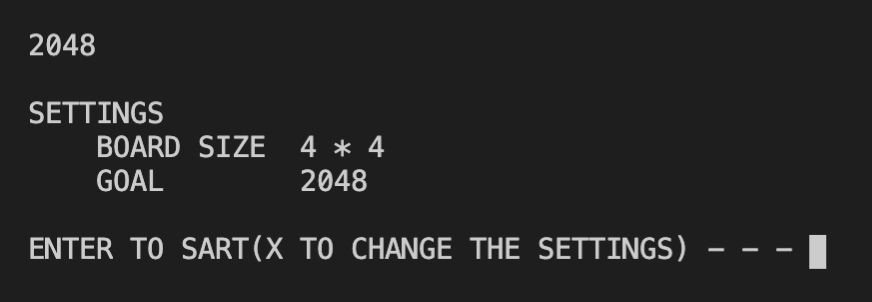
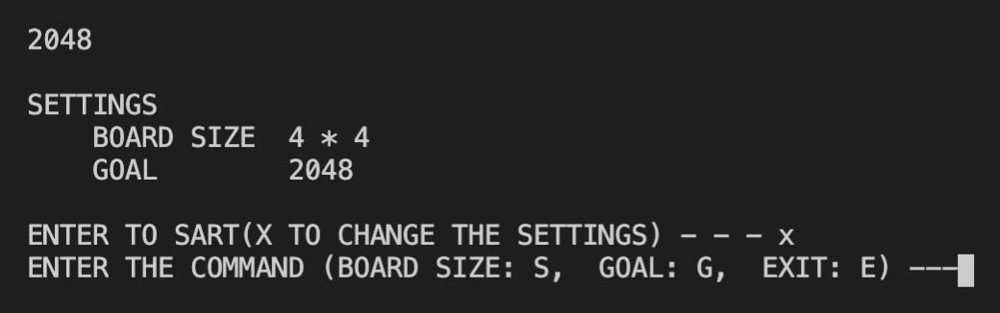
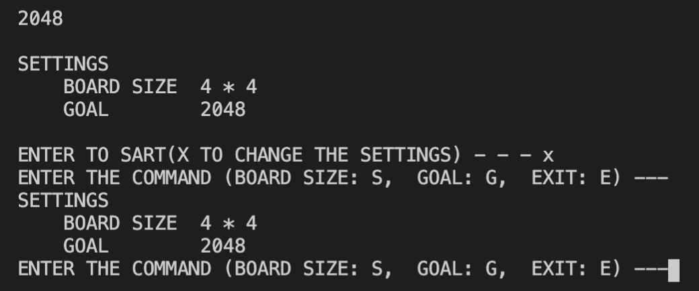
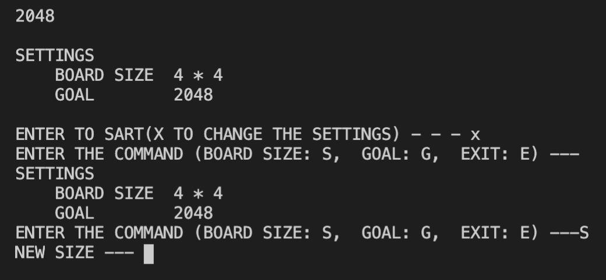
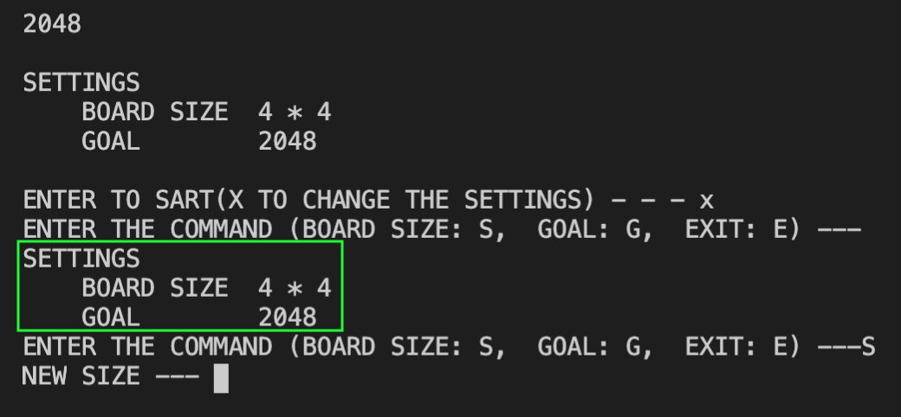

Stage 6 ゲーム進行を実装する
6-1 ゴールやサイズの設定を変更する
これまで盤面の大きさやゴールになる数字は変更が効くように全て変数として扱ってきました。せっかくですのでプレーヤーでも変更できるようにしてさしあげようじゃないですか。
ただ、一応デフォルトを決めてありますから、辞書型でそれをセッティングしておきましょう。ということで main.py ファイルをご覧ください。
### LOG SET UP
logger = logger_setup(__name__, level=DEBUG)
logger.info('start')
parameters = {'size': DEFAULT_SIZE, 'goal': DEFAULT_GOAL}
### SET UP
def settings(command: str):
while command in ['x', 'X']:
setcommand = input('ENTER THE COMMAND (BOARD SIZE: S, GOAL: G, EXIT: E) ---')
while setcommand in ['s', 'S']:
size_command = input('NEW SIZE --- ')
if size_command.isdecimal() == True and int(size_command) >= 2:
parameters['size'] = int(size_command)
break
else:
print('INVALID INPUT')
continue
while setcommand in ['G', 'g']:
goal_command = input('NEW GOAL (8 ~ {}) ---'.format(MAX_GOAL))
if goal_command.isdecimal() == True:
if 8 <= int(goal_command) < MAX_GOAL:
parameters['goal'] = int(goal_command)
break
else:
print('INVALID VALUE')
continue
else:
print('INVALID INPUT')
continue
if setcommand in ['E', 'e']:
return
print('''SETTINGS
BOARD SIZE {} * {}
GOAL {} '''.format(parameters['size'],parameters['size'],parameters['goal']))
def startmenu():
command = input('''
2048
SETTINGS
BOARD SIZE {} * {}
GOAL {}
ENTER TO SART(X TO CHANGE THE SETTINGS) - - - '''.format(parameters['size'],parameters['size'],parameters['goal']))
settings(command)
if __name__ == "__main__":
startmenu()
main_board = board.Board(size=parameters['size'], goal=parameters['goal'])
main_board.print()
while True:
input_d = input('DIRECTION: UP-1, DOWN-2, LEFT-3, RIGHT-4 : ')
logger.debug('input_d = {}'.format(input_d))
if input_d in ['1', 'w', 'W']:
direction = UP
elif input_d in ['2', 's', 'S']:
direction = DOWN
elif input_d in ['3', 'a', 'A']:
direction = LEFT
elif input_d in ['4', 'd', 'D']:
direction = RIGHT
else:
print('INVALID INPUT')
continue
if main_board.move(direction) == FAILED:
print('INVALID DIRECTION')
continue
if main_board.insert() == FAILED or main_board.isOver():
main_board.print()
print('GAME OVER...')
break
if main_board.isGoal() == True:
main_board.print()
print('You WIN!')
break
main_board.print()
logger.info('end')

おいおい、まあまあ長いじゃねぇか
まあそうお気を悪くなさらず。
~~~~~~~~~~~~~~~
とりあえずいつも通りいろいろインポートして、最初はこのファイルで扱うロガーを設定しています。
from config import *
import board
import random
### LOG SET UP
logger = logger_setup(__name__, level=DEBUG)
logger.info('start')
で、この後先ほど申し上げた色々なパラメーターのデフォルトを記載している辞書型を宣言します。
parameters = {'size': DEFAULT_SIZE, 'goal': DEFAULT_GOAL}
とりあえず変更しそうなパラメーターだけを用意しておきました。このデフォルトを変更する機能をコーディングします。その中で、この値をいじって Board のインスタンスを宣言しますから、そのつもりで。
~~~~~~~~~~~~~~~
それでは settings 関数をご覧ください。
### SET UP
def settings(command: str): # when command is X, change the parameters
while command in ['x', 'X']:
setcommand = input('ENTER THE COMMAND (BOARD SIZE: S, GOAL: G, EXIT: E) ---')
while setcommand in ['s', 'S']:
size_command = input('NEW SIZE --- ')
if size_command.isdecimal() == True and int(size_command) >= 2:
parameters['size'] = int(size_command)
break
else:
print('INVALID INPUT')
continue
while setcommand in ['G', 'g']:
goal_command = input('NEW GOAL (8 ~ {}) ---'.format(MAX_GOAL))
if goal_command.isdecimal() == True:
if 8 <= int(goal_command) < MAX_GOAL:
parameters['goal'] = int(goal_command)
break
else:
print('INVALID VALUE')
continue
else:
print('INVALID INPUT')
continue
if setcommand in ['E', 'e']:
return
print('''SETTINGS
BOARD SIZE {} * {}
GOAL {} '''.format(parameters['size'],parameters['size'],parameters['goal']))
引数には次回コーディングするスタートメニューでのコマンドを入れておきます。
ここで X がコマンドに入れられていればパラメーターを変更する運びとなります。
この画面にきたら
| やりたいこと | コマンド |
|---|---|
| サイズを変更したい | S |
| ゴールを変更したい | G |
| やっぱり変更しない | E |
という具合にコマンドを入れさせます。
~~~~~~~~~~~~~~~
それでは実際に関数の中身をコーディングしていきましょう。スタートメニューの command に X が入っていることが大前提となりますので、まず最初はこうします。
え？S とか G とかのなかに X なんて入ってなかったよ
それこの次の画面。人の話よく聴け。
def settings(command: str): # when command is X, change the parameters
while command in ['x', 'X']:
setcommand = input('ENTER THE COMMAND (BOARD SIZE: S, GOAL: G, EXIT: E) ---')

なんでわざわざ while なん？if でええやん
例えば設定画面で何も気づかずそのまま ENTER キーを押してしまったとします。もし if ならそのままスタートメニューに戻ってしまいますが、while にすることでこのように何度でも「入力はまだですか？」とお伺いを立てられますね。

おっちょこちょいのための安全ネットみたいなもんか
まあそういうことになります。
まずサイズを変更するのか、ゴールを変更するのか、はたまたやっぱり気が変わって何も変更しないのか、お伺いをたてます。
この一番下の行ですね。サイズは S を、ゴールは G を、何も変更しないのは X をコマンドとします。
~~~~~~~~~~~~~~~
サイズを変更する場合、プレーヤーにサイズはいくつがいいか、お伺いをたてます。
こうなるようにコーディングすると
while setcommand in ['s', 'S']:
size_command = input('NEW SIZE --- ')
こうなりますね。
やっぱここでも if じゃなくて while なんやな
そうですね。間違った入力した時に元の画面に戻っていると、ユーザーもびっくりしてしまいますから。
あれ、なんで元の画面に戻っとるん？？
isdecimal メソッドを使って数字であると判定でき、またその値が 2 以上であることがわかったら、それを正式なサイズとして認めます。
if size_command.isdecimal() == True and int(size_command) >= 2:
parameters['size'] = int(size_command)
break
1 × 1 マスって、最初に 2 つ数字を入れることすらできませんからね。ちゃんと break してサイズを変更するループから脱出しましょう。
一方、入力値が数字でなかったり、適正な数字でなかったりしたら、「不適切な入力」ということでしっかりしたものを入れてくれるまで入力を要求し続けます。
else:
print('INVALID INPUT')
continue
continue することによって再度サイズを変更するループを繰り返すわけです。
~~~~~~~~~~~~~~~
今度はゴールの設定に入りましょう。条件は command が G の場合ですね。
while setcommand in ['G', 'g']:
goal_command = input('NEW GOAL (8 ~ {}) ---'.format(MAX_GOAL))
if goal_command.isdecimal() == True:
...
入力前から「8 ~ MAX_GOAL (ここにはしっかり具体的な数字を入れる)の間じゃないとダメですよ」という具合に、入力値の範囲を指定しておきます。
なんでわざわざ 8 以上なん？
ゲームが開始した瞬間からゴールして、結局プレーヤーが何もしていないのにクリアしてしまうという事態を避けるためです。ほら、2, 4 がゴールだったらスタートした時点で終了しちゃって
え？何が起こったの？なんか終わってるんだけど？？
ってなるでしょ？
で、入力してもらったものがまずは数字であるか、先ほど同様に isdecimal で判別します。
if goal_command.isdecimal() == True:
if 8 <= int(goal_command) < MAX_GOAL:
parameters['goal'] = int(goal_command)
break
else:
print('INVALID VALUE')
continue
数字だったら今度は適正な範囲、つまり 8 ~ MAX_GOAL の中にあるか、確認します。
この 2 つの基準をクリアしたら正式なゴールとして parameters に適用してください。そして break してゴール変更のループから脱出します。
代入するやつ何か int (goal_command) ってなってんだけど
int っていらんくない？
まあ整数が楽だから。

ケッ、そんなしょうもない理由かよ
聞いて呆れるぜ
入力値がマズかったら continue してもう一度ちゃんとした値を入れてもらいましょう。
if goal_command.isdecimal() == True:
if 8 <= int(goal_command) < MAX_GOAL:
parameters['goal'] = int(goal_command)
break
else:
print('INVALID VALUE')
continue
else:
print('INVALID INPUT')
continue
上の else が数字なのに範囲内にない場合、下の else が数字ですらない場合です。
~~~~~~~~~~~~~~~
気が変わって何も変更しない場合、つまりコマンドが E の場合は何も考えずにリターンします。「もういじらなくていい」っておっしゃってんだから。
if setcommand in ['E', 'e']:
return
ここは while じゃないんだな
while でも構いませんが、どうせリターンするんですからループしませんよ。
E をコマンドに入れず設定画面に残っている間は、いま設定がどうなっているか確認できるように表示してあげてください。
print('''SETTINGS
BOARD SIZE {} * {}
GOAL {} '''.format(parameters['size'],parameters['size'],parameters['goal']))
実際に動かしたときでいえばこの部分です。
